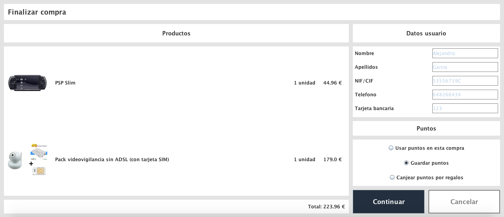
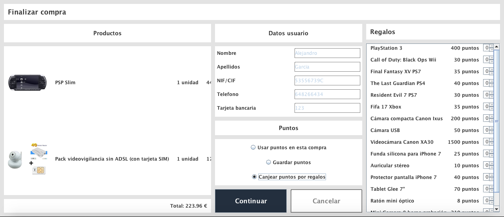

La confirmación de la compra tiene varias vistas posibles, una para usuarios no registrados y dos distintas para usuarios registrados
En este vista podemos observar el estado final de los artículos a comprar, su precio total y un cuadro con los datos a rellenar para el pedido
La primera vista para usuarios registrados sería la vista en la cual no queremos canjear puntos por regalos:
Como se puede observar, a diferencia de la vista anterior esta tiene ya los datos del usuario y las opciones para los puntos, pero en este caso como no queremos regalo no tenemos esta vista
En el caso de seleccionar la opción de canjear puntos por regalos la vista sería así:
Esta vista es igual a la anterior a diferencia de que se añade un panel a la derecha en el cual podemos elegir que regalos queremos a cambio de nuestros puntos